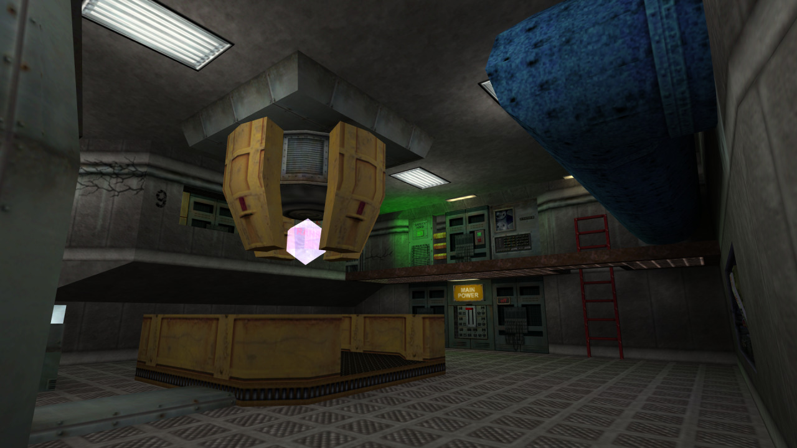
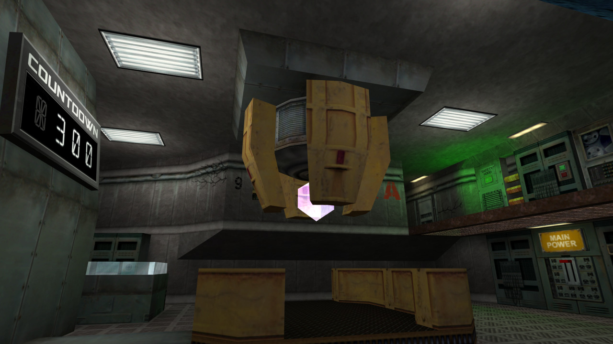
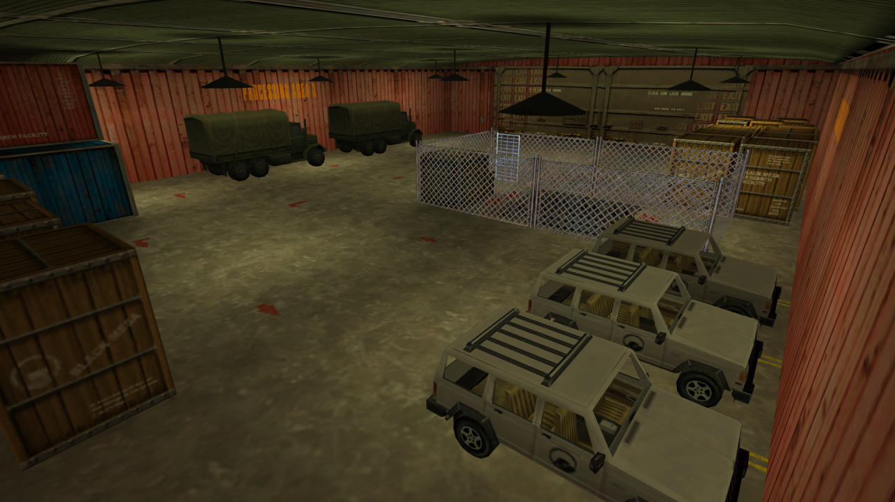

This is my entry for Ragemap 2016. However, due the current issues with optimization discovered on the merged maps a couple of days ago, is going to be delayed, so I decided to release my part for the public meanwhile.
I’m playing with godmode as the Ragemaps are designed to be played up to 10 players at the same time, so it’s very hard (almost impossible) to survive alone. The exit texture seen at the end was to indicate where the next mapper had to start his/her zone (same with the room that has the Generator Access texture, as a way to reach my room from the previous zone).
Created under four hours, and with custom content as the rules says (Blueshift textures and Decay models), my zone are divided into two parts:-The first part is obviously inspirated on the prototype teleporter featured at the end of Half-Life: Blueshift, where you must hold during 300 seconds the place until the machine goes full power.
-The second part is based on the cut chapter Hangar from Decay, where you must seek two security cards in order to open the gates.
The pack includes both the RMF, a compiled BSP that can be played, and the Decay models. You can use the brushwork on your maps, as long as I appear somewhere at the credits.
Link: http://www.mediafire.com/download/bpdvpaufu40d3t9/ragemap2016fenix.7z
My zone features new entities that come with Sven Co-op 5.0, like trigger_numericdisplay (the countdown), or env_sentence (the custom and LOUD VOX sentences, as there are no volume settings). Bear this in mind if you want to use this RMF in another game/mod.